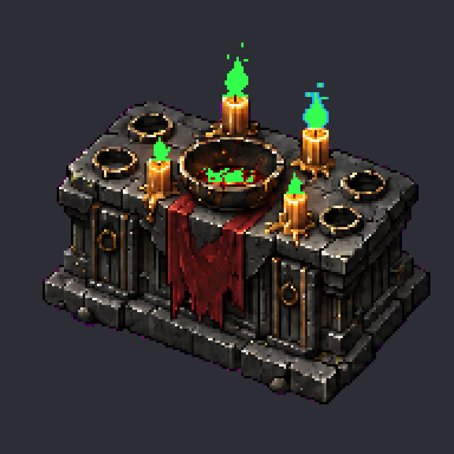
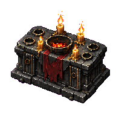
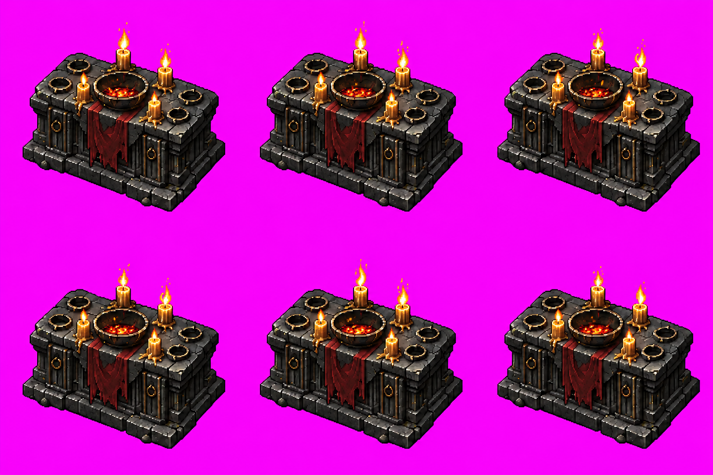

Corpo fixo e opaco em todos os pixels da máscara. Seis quadros distintos. Aceite visual do dono registrado para ciclo de 900 ms.
Fonte CANON AL01 v02 preservada; demais 33 derivadas aceitas intactas. Chama direita oscila até 1 px; três chamas e brasas variam brilho. Preparação visual aceita. Sem integração, commit ou push.
Auditoria · Parâmetros · Hashes das entradas · Tira RGBA 1152×192
Cadência: 900 ms por ciclo
Fundo escuro
Fundo claro
Transparência
Verde: pixels de chama/brasas; azul: margem livre de oscilação. Pedra, pano, bacia e corpos das velas excluídos dos efeitos.

Corpo fixo · Fogo · Área de efeito


Dono aprovou conservação do altar/quatro velas, contornos, pulsação e transição cíclica a 900 ms. 600/1200 ms continuam alternativas de inspeção; cadência aceita é 900 ms. Não houve playtest do jogo nesta etapa.